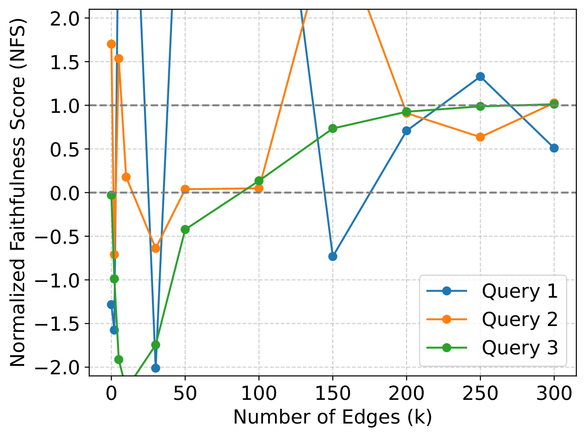
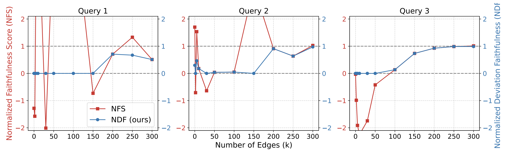
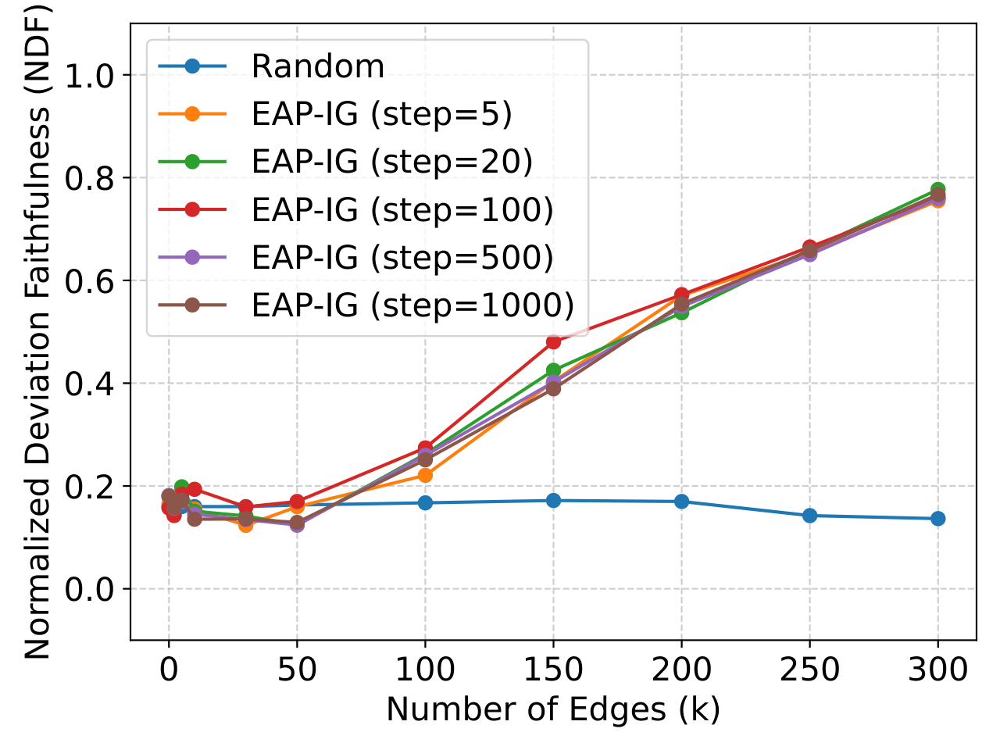
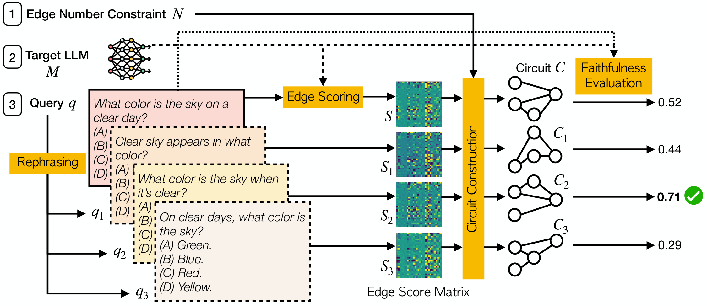
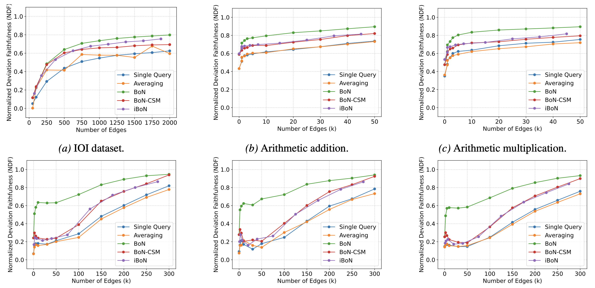
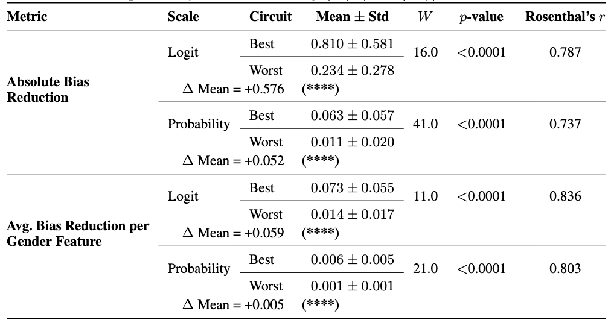

Abstract
Explaining why a language model produces a particular output requires local, input-level explanations. Existing methods uncover global capability circuits (e.g., indirect object identification), but not why the model answers a specific input query in a particular way. We introduce query circuits, which directly trace the information flow inside a model that maps a specific input to the output. Unlike surrogate-based approaches (e.g., sparse autoencoders), query circuits are identified within the model itself, resulting in more faithful and computationally accessible explanations. To make query circuits practical, we address two challenges. First, we introduce Normalized Deviation Faithfulness (NDF), a robust metric to evaluate how well a discovered circuit recovers the model's decision for a specific input, and is broadly applicable to circuit discovery beyond our setting. Second, we develop sampling-based methods to efficiently identify circuits that are sparse yet faithfully describe the model’s behavior. Across benchmarks (IOI, arithmetic, MMLU, and ARC), we find that there exist sparse query circuits within the model that recover much of its performance on single queries. For example, on average, a circuit covering only 1.3% of model connections can recover about 60% of performance on an MMLU question. Overall, query circuits provide a step towards faithful, scalable explanations of how language models process individual inputs.
Key Research Questions
Three core questions this paper asks and answers.
Can a sparse sub-network explain why an LLM answers one specific query the way it does?
Even for complex real-world questions (MMLU, ARC), a circuit covering only ~1.3% of edges can recover ~60% of model behavior on a single query. Compact, query-specific circuits exist and are findable.
Is the standard evaluation metric (NFS) reliable for measuring query-level circuit quality?
NFS becomes numerically unstable on general datasets, with values routinely blowing past [0, 1]. We propose NDF (Normalized Deviation Faithfulness) — bounded in [0, 1] and symmetric around the model's true performance — as a drop-in replacement.
Do existing circuit-discovery methods work well at the single-query level, and if not, what does?
Existing methods (e.g., EAP-IG) need ~50% of all edges before beating a random baseline per query. We propose Best-of-N (BoN) sampling — generating semantically equivalent paraphrases and picking the best-scoring circuit — which reduces required edges by ~40×.

Figure 1: Case study of three queries from MMLU Marketing showing NFS' instability when applied to assess query circuits of different sizes.

Figure 2: Evaluation results under NFS and NDF for the three queries adopted in Figure 1.

Figure 3: Case study on MMLU Astronomy showing that on complex queries, many edges may be needed to recover non-trivial circuits.

Figure 4: The pipeline of Best-of-N sampling for discovering a faithful query circuit of N edges for an input query q, for which it generates p paraphrases. p = 3 in this illustration.

Figure 5: Main results of BoN sampling for query circuit discovery. BoN substantially outperforms all other methods.

Table 1: Bias reduction metrics for paired best- and worst-performing circuits (out of 10 per query) under gender-feature steering. Each pair consists of the best and worst circuit for the same query, matched by NDF. We report one-sided Wilcoxon signed-rank p-values and Rosenthal's r as effect size. Baseline probability bias before steering: |P(he) − P(she)| = 0.542 ± 0.031.
Video Presentation
Poster
BibTeX
@inproceedings{wu2026query,
title={Query Circuits: Explaining How Language Models Answer User Prompts},
author={Tung-Yu Wu and Fazl Barez},
booktitle={Forty-third International Conference on Machine Learning},
year={2026},
url={https://openreview.net/forum?id=7F0sragazb}
}